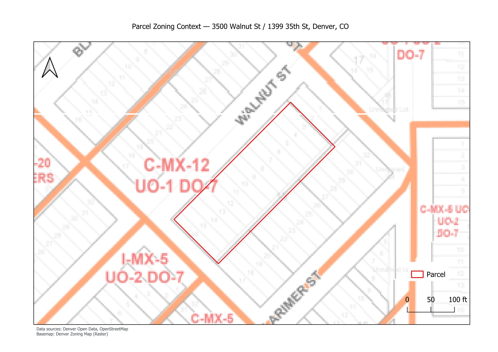
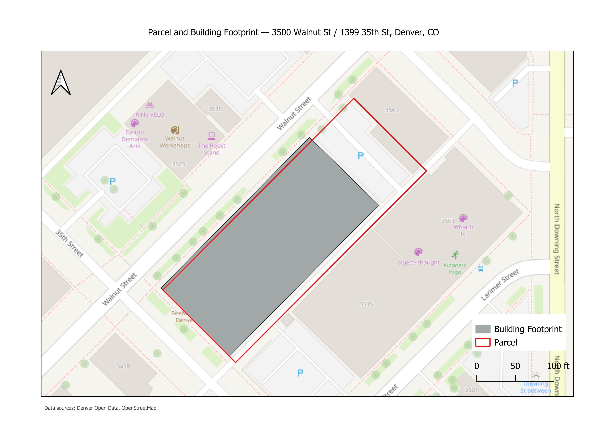

Denver, Colorado
Parcel & Zoning Feasibility Analysis

Project Overview
Location: Denver, Colorado
Property: 3500 Walnut St / 1399 35th St
Existing Use: Warehouse
This project presents a GIS-based parcel and zoning analysis of an urban property in Denver, Colorado. Public GIS data were used to evaluate parcel characteristics, existing development, zoning designation, appraisal information, and redevelopment potential. The property is currently zoned C-MX-12 (Mixed Use), allowing a combination of commercial and residential uses. The existing warehouse predates the current zoning designation.
Key Findings
- The parcel contains a single warehouse building constructed in 1945.
- The current zoning designation is C-MX-12 – Mixed Use.
- The appraised land value is approximately $8.8 million, while the building value is approximately $1,000.
- The property appears underutilized relative to the development potential permitted by the current zoning.
- Parcel and building footprint datasets show an approximate 2 m spatial offset, reflecting differences between public data sources.
Parcel & Building Footprint

Parcel boundaries were combined with building footprint data to evaluate existing site conditions and visualize the relationship between the current structure and the parcel.
Conclusion
This project demonstrates how GIS can support preliminary urban property evaluation by integrating parcel, zoning, appraisal, and building data into a concise feasibility assessment using publicly available datasets.
References
- City and County of Denver — Open Data and Property Records
- City and County of Denver — GIS Data and Mapping Resources
- City and County of Denver — Zoning Information and Zoning Code
- OpenStreetMap — Building Footprint and Basemap Data
- QGIS — Geographic Information System Software
Need Help Evaluating a Property?
Learn more about available services or get in touch.
Contact